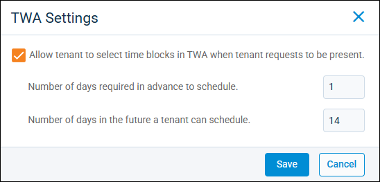
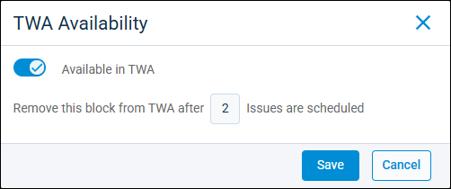

Source: https://rmxhelp.rentmanager.com/Topics/Express/Action/Maintenance-Groups-Manage-TWA-Settings.htm
Manage Maintenance Group TWA Settings
The Maintenance Scheduling feature allows you to group properties and maintenance technicians together on one maintenance schedule, making it easier to view tech availability and schedule service visits. Once maintenance schedules are created, you can allow tenants to report issues through Tenant Web Access (TWA) and schedule their preferred times based on the availability of your technicians.
More Information
This feature is licensed and must be purchased separately. For more information, contact your sales representative at sales@rentmanager.com.
Related Preferences
To allow tenants to submit service issues through TWA, the Allow Tenant to Create Service Issues option must be enabled in system web preferences. For more information, refer to Tenant Web Access Service Issues (System Web Preferences).
Related Privileges
| Group | Privilege | Column |
|---|---|---|
| Service Manager | Maintenance Groups | View, Edit |
For more information, refer to Control User Access.
To edit the Tenant Web Access (TWA) settings for a maintenance group, do the following:
-
Go to
 arrow_forward Services arrow_forward
arrow_forward Services arrow_forward  Service Setup arrow_forward Service Manager arrow_forward Maintenance Groups.
Service Setup arrow_forward Service Manager arrow_forward Maintenance Groups.
The Maintenance Groups page displays. -
Next to the maintenance group whose TWA settings you want to edit, select
 arrow_forward TWA Settings.
arrow_forward TWA Settings.
-
Check Allow tenant to select time blocks in TWA when tenant requests to be present and enter information in the following fields.
Field Description Number of days required in advance to schedule
Determines how soon a tenant can schedule a time slot for the issue they are submitting.
For example, if you enter 2, the earliest time slot they can select is 48 hours after the time of their issue submission.
Number of days in the future a tenant can schedule
Determines how far out in the future a tenant can schedule a time slot for the issue they are submitting.
For example, if you enter 14, the tenant can select only time slots within the next two weeks.
-
Click Save.
The TWA settings for the maintenance group is updated.More Information
If you need to make one-time adjustments to maintenance tech availability in TWA, such as for sick days or vacations, you can do so from the Maintenance Schedule. On the schedule page, select a Maintenance Group in the top-left, go to the day and time block you want to edit, and click
.
You can make the entire time block unavailable for this day by toggling the Available in TWA option off. You can also limit the total number of requests that can be added to the time block by entering a number.